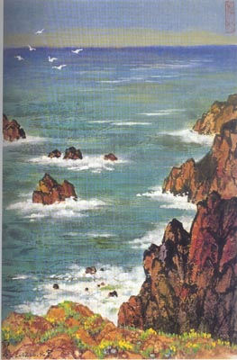

凭什么为一个台湾政治性歌女浪费资源？
2006/4/1 18:34:30

前段时间一个充满台湾军政背景的邓姓歌女十年忌日引来媒体一阵逐臭，夸张者甚至有什么全体华人、全亚洲去祭祀的叫嚷。最近，为了这个台湾政治性歌女，以鼓噪为食的流行界又大肆鼓噪起来。即使媒体的堕落已经与时俱进地与世界全面接轨，难道一个充满台湾军政背景的歌女就真值得全体华人、全亚洲去祭祀？ 凭什么为一个台湾政治性歌女浪费资源？
一个时代的流行符号就是该时代本身，一个充满台湾军政背景的邓姓歌女的流行如果不是因为一个时代的错误，那只能是源自一个错误的时代。而时代是没有错误的，错误的只是构成时代的人。人的堕落才有时代的堕落。狗只喜欢狗食，如此而已。
不用说什么古典与流行的分野，只要同样地去看看一个往日的歌女：柳如是。请问，五四以后，包括邓姓歌女在内，有一个歌女够得上柳如是的万分之一吗？中国传统文化的丧失后，连歌女都是不三不四、不中不洋，可悲！
最后也不用引用柳如是那些不让须眉的诗词，就用一首女人本色的《金明池·咏寒柳》，就知道陈寅恪为什么以“金明馆”、“寒柳堂”为书斋名，并以《寒柳堂集》为书名，又写了那《柳如是别传》进行了永恒的祭祀：
有恨寒潮，无情残照，正是萧萧南浦。更吹起、霜条孤影，还记得、旧时飞絮。况晚来、烟浪迷离，见行客、特地瘦腰如舞。总一种凄凉，十分憔悴，尚有燕台佳句。 春日酿成秋日雨。念畴昔风流，暗伤如许。纵饶有、绕堤画舫，冷落尽、水云犹故。忆从前、一点春风，几隔着重帘，眉儿愁苦。待约个梅魂，黄昏月淡，与伊深怜低语。